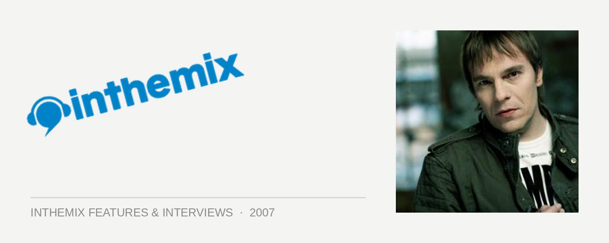

Wippenberg: His grand debut
Wippenberg is Olaf Dieckmann, a German DJ/producer who has had his name out in the dance music domain for over a decade. Kicking things off in 1995 with his highly lauded single Neurodancer, he’s spent a lot of time over the ensuing years producing other people’s music, as well as delivering a number of high-profile remixes for artists like Ian Van Dahl, ATB and Blank & Jones and Tiësto.
In 2007 he’s in the spotlight in a big way due to his high-profile remix of Anjunabeats favourites Super8 & Tab. His take on Needs To Feel is an example of electro trance at its very best, and it’s being caned by the likes of Armin van Buuren, Paul van Dyk and many more. He’s heading to Australia in September, and we’re damn excited. You should be too!
How has 2007 been for you so far, anything out of the ordinary?
2007 has turned out to be a very good year for me so far, which is great and I hope it will go on like this. The years before I was a little bored of the whole trance thing so I took a break from DJing, and on the production side I started to experiment with some fresh stuff like electro and minimal. After producing some records for other DJs in these genres I thought, why not try to take some of these influences and combine it with some melodic stuff?
The biggest thing happening for you in 2007 is your remix of Super8 & Tab’s ‘Needs To Feel’ on Anjuabeats, which is getting played by everyone from Armin van Buuren to Paul van Dyk. Are you excited that it’s had such a good reception?
Yes, I’m very excited about that! It’s great to see people having fun with the track, cause when I did it I wasn’t sure if people would accept it or be open minded enough to give it a chance. It seems like my stuff is very controversial at the moment. There’s lots of people who like it, which is great, but there are also many people – mostly from the classic uplifting trance side – who hate it like hell. However most of them change their opinion after listening to it in a club, instead of some internet radio at home!
Your remix of ‘Needs to Feel’ is a superb example of the ‘electro-trance’ sound, which combines a heavier electro feel with the vibe of euphoric trance. What was driving and inspiring you when you were laying down the remix?
It’s the result of everything I have been experimenting with over the last 2 or 3 years. Most people ask me about that massive bassline in the remix. I made that sound 2 years ago but never found it to fit well in a track, so I saved it and brought it up again for the remix and there it was perfect. As I said, I was a little bored of the whole trance scene because I had the feeling that it somehow got stuck in ‘99. Besides that, the whole “trance thing” suffered a lot from a massive sell-out over here in Germany, which resulted in people calling cheesy stuff like Cascada trance. Here you find samplers called ‘Future Trance’ and ‘Trance Voices’, and if you look at the tracklist you find something like Fedde Le Grande and Cascada. Guys like Tiesto and Armin are rather unknown for most of the people. Paul Van Dyk is quite well know as a famous DJ, but it ends for most people when it comes down to saying what he plays. Over the last few years house, electro and minimal are much more present in Germany, and to be honest I like it. I’m always up for something new that inspires me and I try to combine different styles, cause I think that’s much more interesting than categorising music into separate genres.
Something else that was really big for you just last year was your collaboration with Cosmic Gate on ‘Guess Who’. They’re another act who have been involved in dance music for a very long time, what was it like working together?
We are good friends and we’ve know each other for nearly 10 years now. We live in the same area, so it was just a question of time until we did something together. Claus and Bossi played most of my stuff over the years, so they asked me to do a track together for their album, and a remix for their single ‘Should’ve Known’. We talk very often and send each other new stuff we’re working on to get some first impressions, and we’re going to do a little tour together in the next few months.
What other production work have you got lined up for this year?
I’m working on many things at the moment and I hope to get them all released before the end of the year. Right now I’m doing a remix for a track of Markus Schulz’s new album. A new Wippenberg single is nearly finished, I’m waiting for some vocals but I hope I can play it in Australia for the first time. I also already started a follow up to that single and I’m working on several side projects, so still a lot to come this year.
Throughout your career you have also worked extensively producing other people’s music. Is this still something that you enjoy a lot?
I still like it but I don’t find that much time for it anymore because I decided to put my focus on my own Wippenberg stuff. Maybe I will do some collaborations with others later again, but right now my solo project Wippenberg has priority. I still want to do a track together with Claus from Cosmic Gate, but we’re both that busy at the moment that we don’t find the time for it.
What’s your experience with the Australian dance scene, have you been here before and what are you expecting when you visit here in September?
It’s funny, over the years I played nearly everywhere on this planet but it never took me towards Australia, New Zealand or Asia. I’m very excited about my DJ premiere there! So far I’ve only heard excellent things. The Cosmic Gate guys told me that it’s a great pleasure to play there and that I will have a great time with a great crowd. They are always looking forward to going down under again, and so do I for my debut.
So what sort of sounds are enthralling you at the moment, and what can we expect to hear from your DJ sets?
It’s gonna be a mixture of my own latest stuff and the tracks I like at the moment. I don’t want to categorise it, I just play the tracks I like… So it’s a journey through very different genres. Come along and give it a listen!
You can catch Wippenberg on his first ever Australian tour this September. He plays Pharmacy in Melbourne on Friday September 7th.
Check this video of Armin Van Buuren dropping Wippenberg’s remix of ‘Need To Feel’ when he was in Sydney on his White Tour recently!